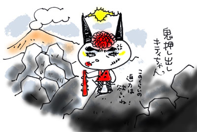

| わたしがはじめて星にロマンを感じたのは、頭上でまたたく星々の輝きが、じつは過去の星のすがただと、祖父に知らされた小学二年生の正月だった。
祖父が住んでいた京都のはずれのたんぼがひろがる星空は、わたしが生まれ育った東京で見上げるうすらぼんやりとした夜空とは異なる漆黒で、目をぱちくりしながら星のまたたきを見上げていたものだ。まぁそれはただただ美しいもので、どちらかといえば、大人になって見た香港の夜景を目の当たりにしたときのカンドーに近かった。
しかし「遠い宇宙から年月をかけて光が届いている」という事実を知ったとたん、星のまたたきに時間があることを感じ、「星は生きている。こりゃスゴイことだ！」と、ちいさな頭のなかで、ロマンがメラメラと燃えあがったのだった。
いまでも、さそり座の赤い巨星アンタレスを見上げるたびに、「あれは五二〇年前の光っすね」と、大自然の悠久な営みにカンドーを覚える。
たぶんひとは「時間を超越」することに、小躍りするようできている、と思う。
GWは軽井沢へ行った。ついでに昨年九月に噴火したばかりの浅間山山麓にある、『鬼押出し園』を訪れた。
天明三（一七八三）年の七月八日。午前一一時頃。浅間山の大噴火にともない、大量の火砕流が流れ出た。『鬼押出し』の名前は、火口内で鬼が暴れて岩を押し出していたようだ、という言い伝えに由来しているそうな。
幅七キロ、長さ一二キロにわたって固まってできた岩の海。世界三大奇勝のひとつらしい。
子供のころに何度か訪れたことはあった。大口をあけて岩にかぶりつこうとしている古い写真は残されているものの、なんの思い出もなかった。
鬼押ハイウェーを車で走っているうちに、ゴツゴツとした溶岩の塊に取り囲まれた。オトナになって見る奇石群は、子供のころに見た印象よりもかなり圧巻だ。
駐車場に車を停め、六〇〇円払って『鬼押出し園』にはいると、しばらく道なりに、みやげもの屋さんが並んでいる。
なかなかいい帽子が売っていた。
つばに扇風機がついていて、頭頂についているソーラーパネルを太陽にあてると、くるくると羽根がまわり、涼しい風を顔におくりこんでくる。千円也。
これいいじゃん、とサイフを取り出したが、日常生活のなかでアレをかぶる機会はぜったいにない。あぶないあぶない、観光客として舞い上がっている証拠だと、自分を諫めた。
ご当地キティちゃんの店もあった。「花豆キティちゃん」や「キャベツキティちゃん」、頭に角をはやした「鬼押出しキティちゃん」もいた。ほかにも、まだある。噴火焼酎やら、鬼押出し園限定の変身キャンデー（なめると舌が真っ赤な赤鬼になるそうだ。青鬼もある）やらに混ざって、目についたのが開運グッズ。なぜここで開運を？ と疑問を抱きつつ、惣門をくぐり、溶岩にはさまれた表参道を歩く。
参道の途中には緊急避難所がいくつもあった。ここで溶岩におそわれたら･･･、とリアルに「死」を意識せずにはいられない。目の前にそびえる浅間山は、もくもくと煙をあげているし。助かるためには、神頼みしかないということか･･･。
浅間山観音堂につくと、ここでもお守りがたくさん売られている。厄よけから、愛犬の健康守り、安眠のお守りまでたくさんの種類があった。地獄でお守りを売るようなもんでズルイぞ、と思った。
惣門の傍らに、ひっそりと石碑があった。
「松林天上」という書家が、昭和三九年にこの地に訪れたときに詠んだ詩が書かれている。一町三村で一一五一名の命が火砕流に飲み込まれた惨状に思いを馳せると涙なくしていられようか、という内容であった。
わたしはこれを読んだとたん、モーレツに感動した。
松林天上は、噴火から百八十年たってなお、参道の溶岩が熱いと感じ、時間を超越して悲しみに暮れている。
星に感じたときと同じようなロマンが、わたしの頭のなかでメラメラと燃えたぎった。
半世紀前には、鬼押出しの奇観に思わず涙した先人がいた。
わたしは、観光名所としてのフィーバーぶりに呑まれていたが、『鬼押出し園』は時間を超越して、天明の悲しみを、しかと現代に伝えているではないか。
子供のころには感知できなかったロマンを感じた二〇〇五年のGWであった。

|